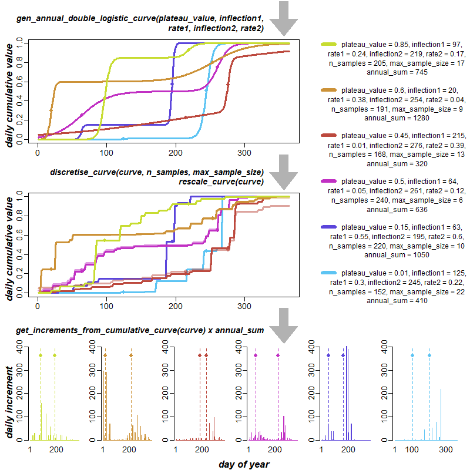

output_dir <- "output"
plot_file_format <- c("png", "eps")[1] # modify index number to change format5 Demonstration of parameter variation: precipitation
Choose file format for generated figures:
Load source file containing the R implementation of the Weather model:
source("source/weatherModel.R")Set up six variations of parameter settings for the annual double logistic curve, discretisation, and annual precipitation, assuming a year length of 365 days. The random generator SEED used in discretisation is fixed:
SEED <- 0
YEAR_LENGTH <- 365
# Function to create parameter matrix
create_param_matrix <- function(x, ncol, nrow) {
matrix(x, ncol = ncol, nrow = nrow, byrow = TRUE)
}
# Double logistic curve parameters
par_values_double_logistic <- create_param_matrix(c(
0.01, 125, 0.3, 245, 0.22,
0.15, 63, 0.55, 195, 0.6,
0.5, 64, 0.05, 261, 0.12,
0.45, 215, 0.01, 276, 0.39,
0.6, 20, 0.38, 254, 0.04,
0.85, 97, 0.24, 219, 0.17
), ncol = 5, nrow = 6
)
colnames(par_values_double_logistic) <- c("plateau_value", "inflection1", "rate1", "inflection2", "rate2")
# Discretisation parameters
par_values_discretisation <- create_param_matrix(c(
152, 22,
220, 10,
240, 6,
168, 13,
191, 9,
205, 17
), ncol = 2, nrow = 6
)
colnames(par_values_discretisation) <- c("n_samples", "max_sample_size")
annual_sum_values <- c(410, 1050, 636, 320, 1280, 745)
num_runs <- nrow(par_values_double_logistic)Create a colour palette for plotting:
num_cold_colours <- num_runs %/% 2
num_warm_colours <- num_runs - num_cold_colours
create_color_sequence <- function(start, end, n) {
seq(start, end, length.out = n)
}
create_color_values <- function(h_range, s_range, v_range, n) {
cbind(
h = create_color_sequence(h_range[1], h_range[2], n) / 360,
s = create_color_sequence(s_range[1], s_range[2], n) / 100,
v = create_color_sequence(v_range[1], v_range[2], n) / 100
)
}
color_palette_values <- rbind(
create_color_values(c(198.6, 299.4), c(61.6, 75.3), c(95.2, 76.4), num_cold_colours),
create_color_values(c(5.15, 67.5), c(67, 77.8), c(73.7, 86.4), num_warm_colours)
)
color_palette <- apply(color_palette_values, 1, function(x) hsv(x[1], x[2], x[3]))Plot curves:
# Helper functions
create_data_frame <- function(rows, cols) {
data.frame(matrix(0, nrow = rows, ncol = cols))
}
create_plot <- function(x_range, y_range, ...) {
plot(x_range, y_range, type = "n", xlab = "", ylab = "", ...)
}
add_text <- function(x, y, label, ...) {
text(x = x, y = y, labels = label, ...)
}
draw_curve <- function(curve, color, ...) {
lines(1:length(curve), curve, col = color, ...)
}
draw_points <- function(x, y, color, ...) {
points(x, y, col = color, ...)
}
# Main plotting function
plot_annual_double_logistic <- function(par_values_double_logistic, par_values_discretisation, annual_sum_values) {
# Create data frames
double_logistic_curves <- create_data_frame(YEAR_LENGTH, num_runs)
discretised_double_logistic_curves <- create_data_frame(YEAR_LENGTH, num_runs)
daily_precipitation <- create_data_frame(YEAR_LENGTH, num_runs)
# Layout setup
layout_matrix <- matrix(c(14, 14, 14, 14, 14, 17, 17,
1, 5, 5, 5, 5, 17, 17,
15, 15, 15, 15, 15, 17, 17,
2, 6, 6, 6, 6, 17, 17,
16, 16, 16, 16, 16, 17, 17,
3, 7, 8, 9, 10, 11, 12,
4, 13, 13, 13, 13, 13, 13),
nrow = 7, ncol = 7, byrow = TRUE)
layout(layout_matrix,
widths = c(2, rep(10, 6)),
heights = c(4, 12, 4, 12, 4, 12, 1))
par(mgp = c(3, 0.4, 0), tcl = -0.4, cex = graphic_scale * 1.2)
# Y-axis titles
y_axis_titles <- c("daily cumulative value", "daily cumulative value", "daily increment")
for (i in 1:3) {
par(mar = c(0, 0, 0, 0))
create_plot(c(0, 1), c(0, 1), ann = FALSE, bty = 'n', xaxt = 'n', yaxt = 'n')
add_text(0.5, 0.5, y_axis_titles[i], font = 4,
cex = graphic_scale * (0.7 + font_rescale), srt = 90)
}
# Empty plot
create_plot(c(0, 1), c(0, 1), ann = FALSE, bty = 'n', xaxt = 'n', yaxt = 'n')
# Double logistic curves plot
par(mar = c(1, 1, 0.1, 1), cex.axis = graphic_scale * (0.5 + font_rescale))
create_plot(c(1, YEAR_LENGTH), c(0, 1))
for (i in 1:nrow(par_values_double_logistic)) {
curve <- gen_annual_double_logistic_curve(
plateau_value = par_values_double_logistic[i, 1],
inflection1 = par_values_double_logistic[i, 2],
rate1 = par_values_double_logistic[i, 3],
inflection2 = par_values_double_logistic[i, 4],
rate2 = par_values_double_logistic[i, 5],
year_length = YEAR_LENGTH)
draw_curve(curve, color_palette[i], lwd = graphic_scale * 3)
draw_points(c(par_values_double_logistic[i, 2], par_values_double_logistic[i, 4]),
c(curve[par_values_double_logistic[i, 2]], curve[par_values_double_logistic[i, 4]]),
color_palette[i], pch = 19)
double_logistic_curves[,i] <- curve
}
# Discretised double logistic plot
create_plot(c(1, YEAR_LENGTH), c(0, 1))
for (i in 1:nrow(par_values_double_logistic)) {
curve <- discretise_curve(
curve = double_logistic_curves[,i],
n_samples = par_values_discretisation[i, 1],
max_sample_size = par_values_discretisation[i, 2],
seed = SEED)
draw_curve(curve, adjustcolor(color_palette[i], alpha.f = 0.5), lwd = graphic_scale * 3)
draw_points(c(par_values_double_logistic[i, 2], par_values_double_logistic[i, 4]),
c(curve[par_values_double_logistic[i, 2]], curve[par_values_double_logistic[i, 4]]),
adjustcolor(color_palette[i], alpha.f = 0.5), pch = 19)
curve <- rescale_curve(curve)
draw_curve(curve, color_palette[i], lwd = graphic_scale * 3)
draw_points(c(par_values_double_logistic[i, 2], par_values_double_logistic[i, 4]),
c(curve[par_values_double_logistic[i, 2]], curve[par_values_double_logistic[i, 4]]),
color_palette[i], pch = 19)
discretised_double_logistic_curves[,i] <- curve
}
# Daily precipitation plots
par(mar = c(2, 1, 0.1, 1), cex.axis = graphic_scale * (0.35 + axis_text_rescale))
daily_precipitation <- sapply(1:nrow(par_values_double_logistic), function(i) {
get_increments_from_cumulative_curve(discretised_double_logistic_curves[,i]) * annual_sum_values[i]
})
maxdaily_precipitation <- max(daily_precipitation)
for (i in nrow(par_values_double_logistic):1) {
barplot(daily_precipitation[,i],
names.arg = c("1", rep(NA, 98), "100", rep(NA, 99), "200", rep(NA, 99), "300", rep(NA, 65)),
ylim = c(0, maxdaily_precipitation),
col = color_palette[i],
border = color_palette[i])
draw_points(c(par_values_double_logistic[i, 2], par_values_double_logistic[i, 4]),
rep(maxdaily_precipitation * 0.9, 2),
color_palette[i], pch = 19)
abline(v = par_values_double_logistic[i, 2], col = color_palette[i], lty = 2)
abline(v = par_values_double_logistic[i, 4], col = color_palette[i], lty = 2)
}
# X-axis title
par(mar = c(0, 0, 0, 0))
create_plot(c(0, 1), c(0, 1), ann = FALSE, bty = 'n', xaxt = 'n', yaxt = 'n')
add_text(0.5, 0.4, "day of year", font = 4, cex = graphic_scale * (0.7 + font_rescale))
# Infographic bits
draw_infographic <- function(label) {
create_plot(c(0, 1), c(0, 1), ann = FALSE, bty = 'n', xaxt = 'n', yaxt = 'n')
polygon(x = arrow_pos_x[1] + (arrow_pos_x[2] - arrow_pos_x[1]) * arrow_points_x,
y = arrow_points_y,
col = rgb(0,0,0, alpha = 0.3),
border = NA)
add_text(text_pos[1], text_pos[2],
label, font = 4, cex = graphic_scale * (0.65 + font_rescale), adj = c(1, 0.5))
}
arrow_points_x <- c(1/3, 2/3, 2/3, 1, 0.5, 0, 1/3, 1/3)
arrow_points_y <- c(1, 1, 0.5, 0.5, 0, 0.5, 0.5, 1)
arrow_pos_x <- c(0.9, 1)
text_pos <- c(0.88, 0.4)
par(mar = c(0, 0, 0, 0))
infographic_labels <- c(
"gen_annual_double_logistic_curve(plateau_value, inflection1,\nrate1, inflection2, rate2)",
"discretise_curve(curve, n_samples, max_sample_size)\nrescale_curve(curve)",
"get_increments_from_cumulative_curve(curve) x annual_sum"
)
lapply(infographic_labels, draw_infographic)
# Legend
par(mar = c(0, 0, 0, 0))
create_plot(c(0, 1), c(0, nrow(par_values_double_logistic) + 1),
ann = FALSE, bty = 'n', xaxt = 'n', yaxt = 'n')
y_pos <- c(0.5, seq(0.1, -0.3, length.out = 3))
x_pos <- 0.55
jump <- 1
for (i in 1:nrow(par_values_double_logistic)) {
legend(x = 0,
y = (y_pos[1] + jump * i),
legend = substitute(
paste("plateau_value = ", plateau_value, ", ",
"inflection1 = ", inflection1, ", "),
list(plateau_value = par_values_double_logistic[i, 1],
inflection1 = par_values_double_logistic[i, 2])),
col = color_palette[i],
lwd = graphic_scale * 6, cex = graphic_scale * (0.5 + font_rescale),
title = NULL,
bty = "n")
add_text(x_pos,
(y_pos[2] + jump * i),
substitute(
paste("rate1 = ", rate1, ", ",
"inflection2 = ", inflection2, ", ",
"rate2 = ", rate2, ","),
list(rate1 = par_values_double_logistic[i, 3],
inflection2 = par_values_double_logistic[i, 4],
rate2 = par_values_double_logistic[i, 5])),
cex = graphic_scale * (0.5 + font_rescale))
add_text(x_pos,
(y_pos[3] + jump * i),
substitute(
paste("n_samples = ", n_samples, ", ",
"max_sample_size = ", max_sample_size),
list(n_samples = par_values_discretisation[i, 1],
max_sample_size = par_values_discretisation[i, 2])),
cex = graphic_scale * (0.5 + font_rescale))
add_text(x_pos,
(y_pos[4] + jump * i),
substitute(
paste("annual_sum = ", annual_sum),
list(annual_sum = annual_sum_values[i])),
cex = graphic_scale * (0.5 + font_rescale))
}
}
# Main execution
plot_name <- file.path(output_dir, paste0("Fig5-annualDoubleLogisticCurve.", plot_file_format))
if (plot_file_format == "png") {
graphic_scale <- 2
font_rescale <- axis_text_rescale <- 0
png(plot_name, width = graphic_scale * 1000, height = graphic_scale * 1000)
} else if (plot_file_format == "eps") {
graphic_scale <- 1.2
font_rescale <- 0.1
axis_text_rescale <- 0.1
extrafont::loadfonts(device = "postscript")
grDevices::cairo_ps(filename = plot_name, pointsize = 12,
width = graphic_scale * 10, height = graphic_scale * 10,
onefile = FALSE, family = "sans")
}
plot_annual_double_logistic(par_values_double_logistic, par_values_discretisation, annual_sum_values)
dev.off()svg
2 knitr::include_graphics(plot_name)